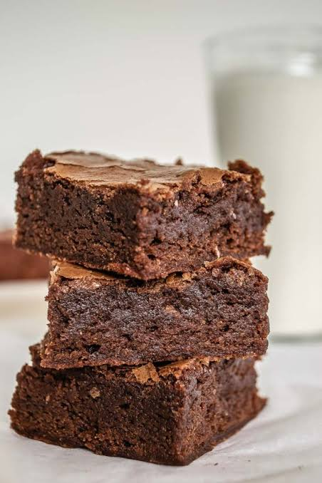
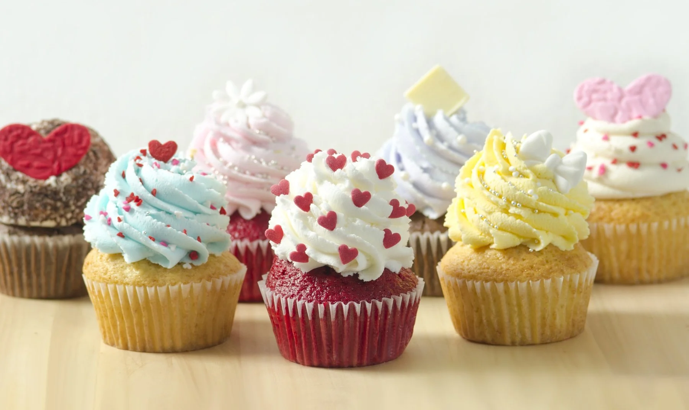

Biscocho de chocolate compacto y denso
Textura: Es mas denso que un pastel tradicional porque suele llevar poca o nada de levadura
Ingredientes base: Se prepara con chocolate negro o cacao, mantequilla, azucar, huevos y harina

pequeña tarta o bizcocho individual diseñada para una sola persona
Textura: Su masa es tierna, similar a un bizcocho, dandole esa textura suave y esponjosa
Ingredientes: Elaborada comunmente con mantequilla, azucar, huevos y leche o harina